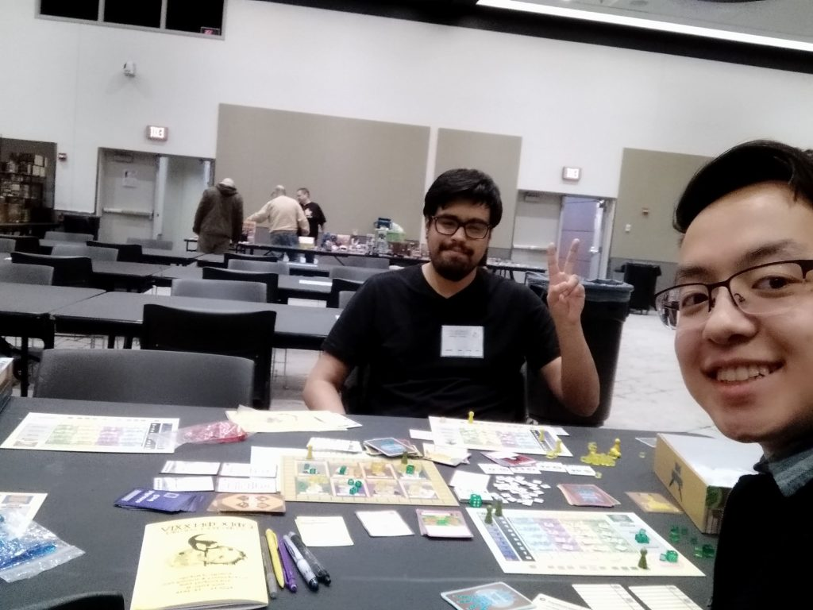

How to increase the incentive to win? Daggers High has a solution.
April 15, 2019
The crowd cheers as the members of the winning team jump up and down and hug each other in a strong embrace. On the other side of the field, the losers are devastated, and silent. In any professional sport, the stakes are high, with large amounts of money and fame on the line. But often times, it can be more personal than that, even for the fans. Those who are not very into sports might not understand this very well (admittedly, I am one of them). After all, they should have no real stake in the game, right?

This weekend was Cod Con 2019, and I finally had the chance to seriously take a look at a way to make winning more important. While winning can be fun in of itself, different people have different levels of investment in the outcome. Some people may not even want to win. This can be a big problem in games that have a lot of player interaction, such as Daggers High. Even one player who does not care about the game can have a huge effect on everyone’s enjoyment at the table. It makes winning less enjoyable (after all, some of the players “weren’t trying”). It also can make it much harder for player interaction to work its delightful, delicious magic in creating a tight race full of diplomacy and backstabbing.
While this can sometimes be a problem with the players, as a game designer I wanted to come up with a way to help solve it from my end. This meant creating an additional incentive for players to win. So I came up with a fun thematic idea: the player who wins would get to write anything they wanted on the back of the rulebook in the form of a Senior Quote:
It was very well received, and everyone who won a game decided to write a senior quote. In one case, I won (When playing my own game to make numbers work, I generally try to avoid winning. I talk about the ethics and justification behind that in this blog post), but still let the other player write a quote. The players varied in their quotes, with some writing very warm thoughts about my game, and others talking a bit about their character or something more meta. I let all players know about the senior quotes feature before they began the game.
While it is hard to separate cause and effect, I think that this made the players much more invested in the game overall. In one game, the two players in the lead came to an intense argument over whether it was cheating for someone to take back their turn to try and eek out a few additional points to win! I think that is a great sign, as it shows that people really cared about the game and its outcome.
There is one more thing that I included in the game that I wanted to mention as well. That is the Valedictorian card:
There is an event card in the game that when played, has all players count their number of A’s. The player with the most A’s gets to be the Valedictorian. In my experience, players have often times been very invested in the process of counting their grades, only to find out that they have been trolled. That being said, this card makes the game even more engaging, as it makes the ending a lot more significant than just cleaning up the game. It is especially hilarious when the player who wins is not the valedictorian, which often results in quite a bitter speech.
How can you apply this principle?
The sky is the limit in terms of creating extra incentives for the players to win. That being said, I believe that it is best when this incentive is highly thematic. I am not sure that the method I used would be very applicable to a different game that is not about high school. I would also look for ways to have the players personalize their victory so that they can remember some of the highlights of the game afterward.
Have you tried doing something like this in your game design? As a player, would you be interested by this type of mechanic? Let me know in the comments below. Thank you for reading!
By the way, here is a photo gallery of my time at Cod Con 2019. It was a blast!
